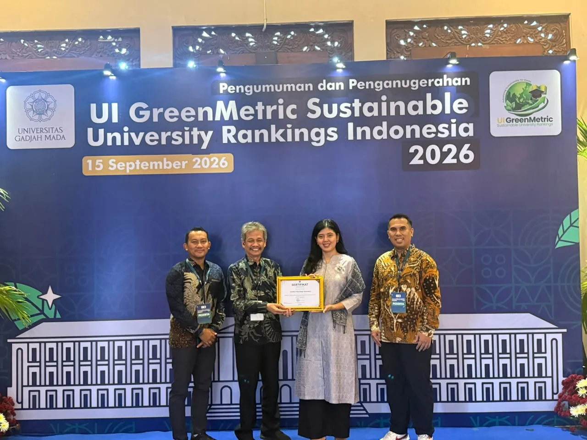

ITERA Raih Peringkat Dua Nasional Perguruan Tinggi Paling Berkelanjutan
Oleh Humas ITERA (Editor: Rudiyansyah) ·

Institut Teknologi Sumatera (ITERA) meraih peringkat kedua Perguruan Tinggi Negeri (PTN) Satuan Kerja (Satker) paling berkelanjutan di Indonesia tahun 2026 dalam Pemeringkatan UI GreenMetric Indonesia 2026. Penghargaan diterima langsung oleh Rektor ITERA, Prof. Dr. apt. Elfahmi, S.Si., M.Si., didampingi Kepala LPPM dan Kepala SDGs Center ITERA, dalam acara penganugerahan di Graha Sabha Pramana, Universitas Gadjah Mada (UGM), Yogyakarta, pada Selasa, 15 September 2026.
Capaian ini melanjutkan kiprah ITERA di bidang keberlanjutan kampus, setelah pada tahun 2025 ITERA juga meraih penghargaan sebagai Perguruan Tinggi Paling Berkelanjutan dalam Bidang Penataan Ruang dan Infrastruktur. Ke depan, ITERA berkomitmen mengembangkan kampus sebagai living laboratory for sustainability bagi pembelajaran, penelitian, dan inovasi keberlanjutan.